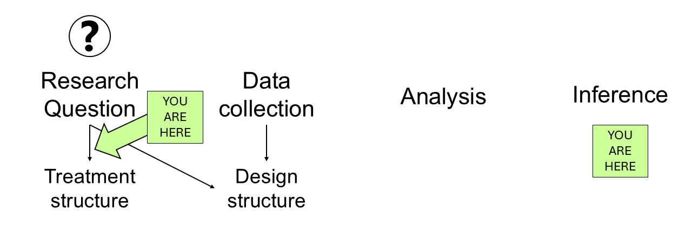

Day 7 What you ask of a designed experiment
June 17th, 2025
7.1 Announcements
- Homework due this Friday
- Project proposal due this Friday
- Next week will be on Zoom
7.2 Review
Pre-selected treatments are usually assumed to affect the expected value. Today we’ll focus on those means of interest.

Figure 7.1: Mindmap of the analysis of a designed experiment, from the inception to the end conclusions
7.3 ANOVA
| Source | df |
|---|---|
| Treatment | t-1 |
| Parallels | N-t |
| Total | N-1 |
| Source | df |
|---|---|
| Factor A | a-1 |
| Factor B | b-1 |
| A x B | (a-1)(b-1) |
| Parallels | N-(ab) |
| Total | N-1 |
| Source | df |
|---|---|
| Factor A | a-1 |
| Factor B | b-1 |
| Factor C | c-1 |
| A x B | (a-1)(b-1) |
| A x C | (a-1)(c-1) |
| B x C | (b-1)(c-1) |
| A x B x C | (a-1)(b-1)(c-1) |
| Parallels | N-(abc) |
| Total | N-1 |
7.4 Setting the stage: Estimated marginal means aka least squares means
Sometimes, model coefficients or effects are hard to interpret.
In designed experiments, we often use the estimated marginal means or least square means to provide a more interpretable result.
Estimated marginal means are the expected mean for a given level of a factor, averaging over the other factors in the model.
In R, the estimated marginal means are famously handled with the emmeans package.
7.5 Tomorrow
- More hands-on practice.
- Your moment to ask the questions about least square means you’ve always wanted to ask.